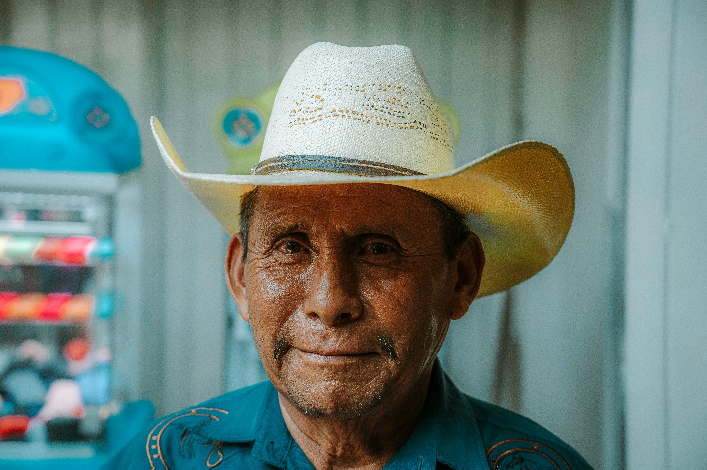

À propos d’Arvest
Plateforme collaborative pour la sauvegarde et la valorisation des contes, proverbes et arts du Katanga.
Notre mission : préserver ce patrimoine culturel unique et le partager avec le monde.


Nous valorisons la culture katangaise
Arvest s’engage à transmettre les histoires, proverbes et arts du Katanga à travers des formats modernes (texte, audio, image) pour tous : jeunes, écoles, artistes et chercheurs.
Le saviez-vous ?
80% des contes oraux du Katanga risquent de disparaître d’ici 2030 (UNESCO RDC).
Comment ça marche ?
Pour les visiteurs
- Explorer librement les contes et proverbes
- Aimer vos favoris
- Partager avec vos proches
Pour les contributeurs
- Publier vos histoires ou œuvres
- Validation par un comité local
- Publication sur la plateforme
Nos engagements
- Authenticité : Tous les contenus sont vérifiés par des gardiens de la tradition.
- Gratuité : L’accès à la plateforme est 100% gratuit pour tous.
- Transparence : Chaque auteur ou contributeur est crédité.

Qui sommes-nous ?
- Équipe : Trois développeurs katangais + 12 conseillers culturels.
- Partenaires : Institut Français, écoles locales, radios communautaires.
Notre vision
- À court terme : Devenir la référence culturelle en RDC.
- À long terme : Étendre à toutes les provinces congolaises.
FAQ Express
Oui, tout est accessible gratuitement pour les enseignants et élèves !
Il suffit de créer un compte (moins de 2 minutes) puis de proposer vos histoires ou œuvres.

Rejoignez-nous !
Vous souhaitez participer à la sauvegarde et à la valorisation du patrimoine oral katangais ?
Contribuez dès maintenant
Télécharger notre charte